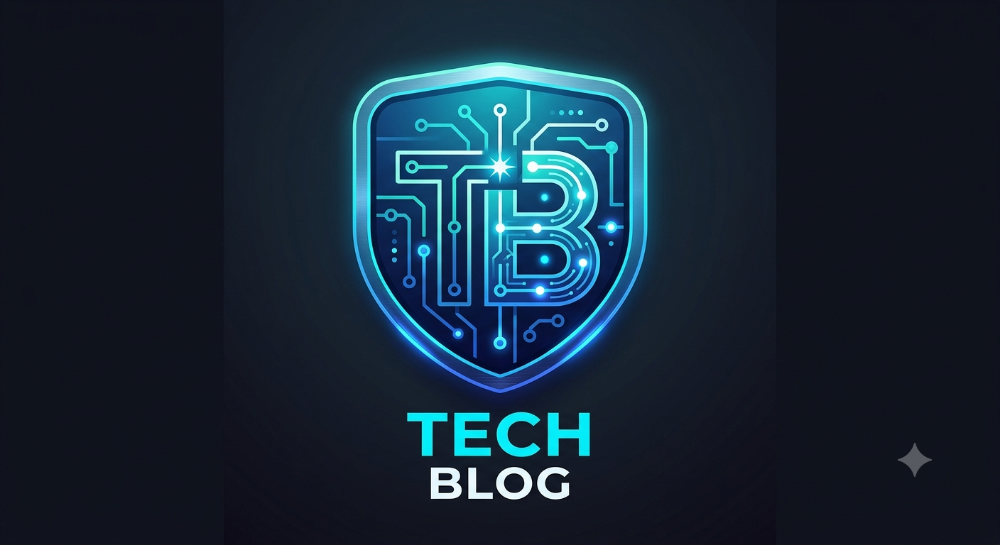

Meu primeiro post
Por: vitor gabriel
Boas-vindas ao meu novo blog! Aqui irei compartilhar dicas de progamação e curiosidades da área de tecnologia.
Vou compartilhar conhecimento sobre tecnologia e progamação

Por: vitor gabriel
Boas-vindas ao meu novo blog! Aqui irei compartilhar dicas de progamação e curiosidades da área de tecnologia.